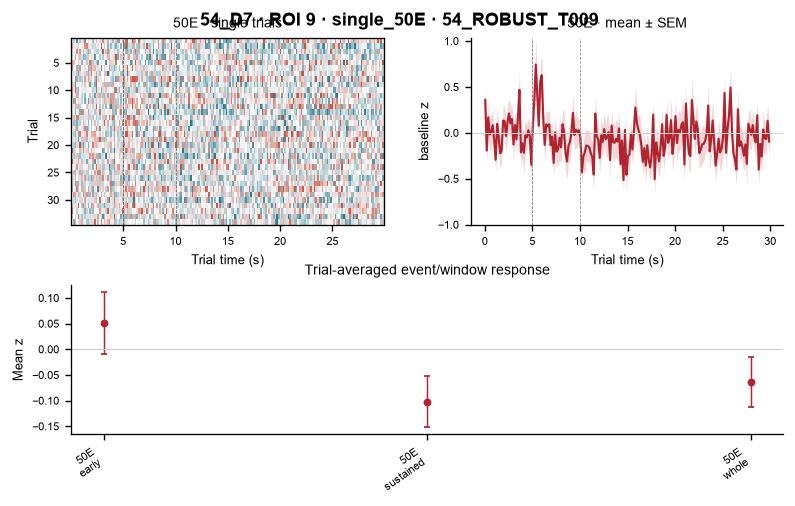

54_ROBUST_T009
The same tracked cell is shown across every session in which it is currently identified. Each session panel retains single-trial heatmaps first, then trial-averaged mean ± SEM and event-window summaries.
54_D6 · 100E_vs_100E+Q · ROI 40
100E+Q | 100E

54_D7 · single_50E · ROI 9
50E
